Clinical Approach to Osteology & Joints of the Proximal Upper Extremity
- Four joints move the shoulder: sternoclavicular (the only bony link from the arm to the axial skeleton), AC, glenohumeral and scapulothoracic. Raising the arm uses about 2:1 glenohumeral to scapulothoracic movement (scapulohumeral rhythm).
- The glenohumeral joint trades stability for mobility. A big humeral head sits on a shallow glenoid, with a lax capsule. It relies on the labrum, the glenohumeral ligaments (anterior) and the rotator cuff, so it dislocates anteriorly.
- AC joint: gradual pain is osteoarthritis; an acute fall on the point of the shoulder is a separation. Types I–III go to a sling and early motion; IV–V go to surgery.
- Read the motion. OA: active and passive both reduced (osteophytes block it), cuff intact. Inflammatory: passive > active, cuff weak, which is why it gets a reverse replacement. Frozen shoulder: active and passive reduced in all directions with a normal x-ray, in up to 20% of diabetics, and it is self-limited.
- Instability: traumatic means unidirectional, almost always anterior, “torn loose”, with surgery often needed in the young. AMBRI means atraumatic, multidirectional, bilateral, poor motor control, “born loose”: rehab, rehab, rehab.
Learning Objectives
- Identify the functional anatomy of the upper extremity as it relates to arm pathology: the features of its bones and joints, and how they look on plain radiographs.
- Create a differential and management plan for upper extremity complaints: numbness, weakness, pain and loss of range of motion.
- Describe the anatomical basis of common shoulder pathology: AC separation, rotator cuff disease, biceps tendinopathy, arthritis, instability and adhesive capsulitis.
- Outline an approach to diagnosis and management, including non-pharmacologic, pharmacologic and surgical options, for these conditions.
Dr. Charys Martin (anatomy) and Dr. Ken Faber (orthopaedic surgery, Roth McFarlane Hand & Upper Limb Centre). Eleven recordings, about 75 minutes. Rotator cuff disease and biceps tendinopathy are listed in the objectives but not covered here. The module says these objectives are spread across other modules, labs and Clinical Skills, and it tells you to do “Brachial Plexus” and “Clinical Approach to the Muscles of the Shoulder” before the Proximal Upper Extremity Part I lab.
Osteology
Dr. Martin's 27-minute bones recording and its x-ray knowledge check.
The Pectoral Girdle
The clavicle and scapula attach the upper limb to the axial skeleton, through a series of four joints, not one.
| Joint | Between | Key point |
|---|---|---|
| Sternoclavicular (SC) | Medial clavicle and the manubrium | The only articulation joining the upper limb to the axial skeleton. It is very strong, so the clavicle fractures before the SC joint dislocates. |
| Acromioclavicular (AC) | Lateral clavicle and the acromion | A plane synovial joint, with a weak capsule and strong ligaments |
| Glenohumeral (GH) | Glenoid fossa and the humeral head | The “true” shoulder joint: ball-and-socket |
| Scapulothoracic | The deep scapula on the chest wall | A conceptual joint: the scapula gliding over the ribs |
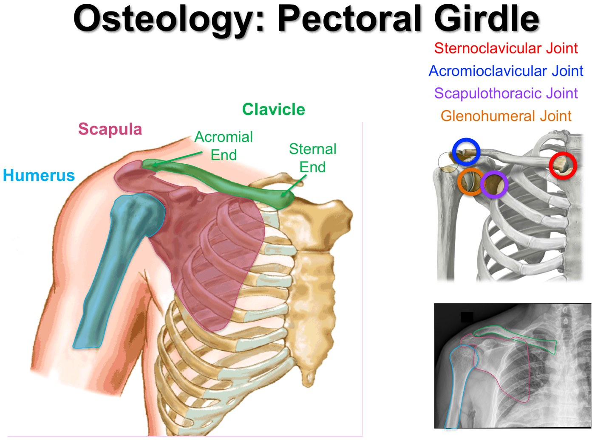
The shoulder has the widest range of motion of any joint: flexion, extension, abduction, adduction, circumduction, and medial and lateral rotation. Raising the arm overhead takes movement at all the girdle joints. About two-thirds happens at the glenohumeral joint and one-third at the scapulothoracic (2:1), with some at the SC joint too. The scapula has to move the glenoid into position, and the muscles need a stable origin to work from.
Note: the module's knowledge-check feedback says the pectoral girdle is “the clavicle and humerus”. It is the clavicle and scapula, as the next line of the same feedback and the mini-text both say.
Clavicle, Scapula, Humerus
| Bone and feature | What to know |
|---|---|
| Clavicle | |
| Shape | An S-bend: the medial half is convex forward and the lateral half concave forward |
| Ends | Sternal end enlarged and triangular (“like a trumpet”); acromial end flattened where it meets the acromion |
| Scapula: a triangular flat bone on the posterolateral thorax | |
| Acromion | Meets the clavicle at the AC joint |
| Coracoid process | “Duck's beak”: a large anterior projection for attachments |
| Glenoid fossa | A shallow, concave oval socket for the humeral head. The supraglenoid tubercle above it is the origin of the long head of biceps; the infraglenoid tubercle below is the origin of the long head of triceps. |
| Spine | Divides the back of the scapula into the supraspinous and infraspinous fossae, which hold those muscles. The front is the subscapular fossa. |
| Angles, notch | Superior and inferior angles (where the border changes direction). The suprascapular notch becomes a foramen under the transverse scapular ligament, a passage for neurovascular structures. |
| Humerus | |
| Head; greater (lateral) and lesser (anterior) tubercles | The tubercles are soft-tissue attachments, with the intertubercular (bicipital) groove between them for the tendon of the long head of biceps |
| Anatomical neck vs surgical neck | The anatomical neck separates the head from the tubercles. The surgical neck is the narrowing below the tubercles and is the common fracture site. |
| Radial (spiral) groove | On the back of the shaft, carrying the radial nerve and profunda brachii artery |
| Distal humerus | Trochlea (medial, with the ulna) and capitulum (lateral, with the radial head). The medial epicondyle is the big palpable bump and the origin of the forearm flexors; the ulnar nerve runs behind it. The smaller lateral epicondyle is the origin of the extensors. The coronoid fossa takes the coronoid process in full flexion; the olecranon fossa takes the olecranon in extension. |
| Proximal forearm | Ulna medial, radius lateral. The radial tuberosity is the insertion of biceps. The olecranon (triceps) is the point of the elbow; the coronoid (brachialis) is in front. |
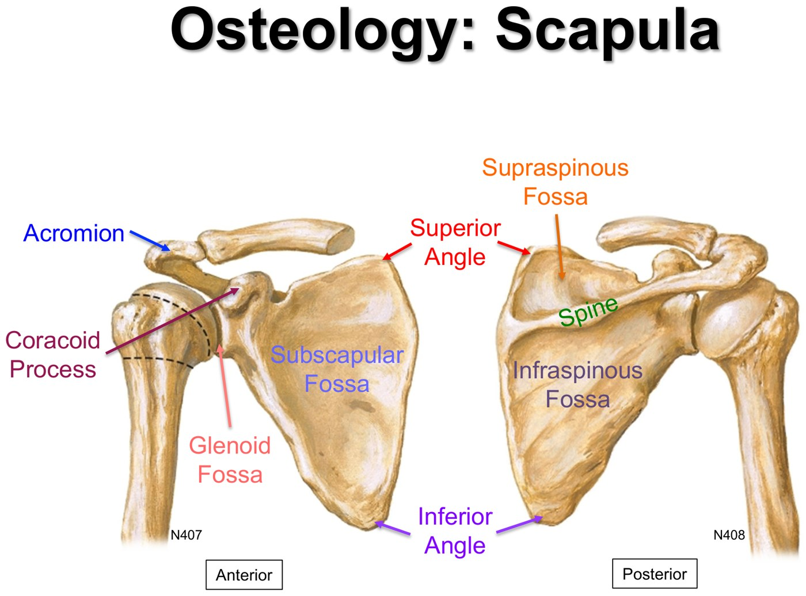
The scapula from the front (subscapular fossa, coracoid) and back (the spine splitting the supra- and infraspinous fossae). Slide from the deck (Netter).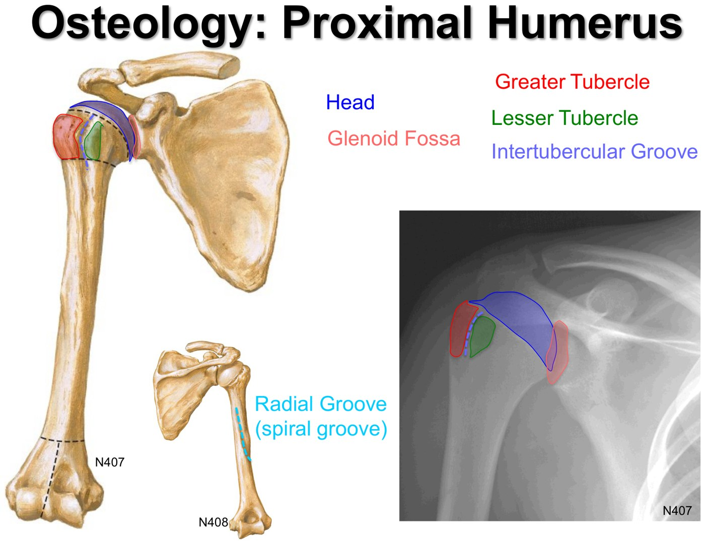
Proximal humerus, on bone and on x-ray: head, tubercles, bicipital groove, and the radial groove behind. Slide from the deck (Netter).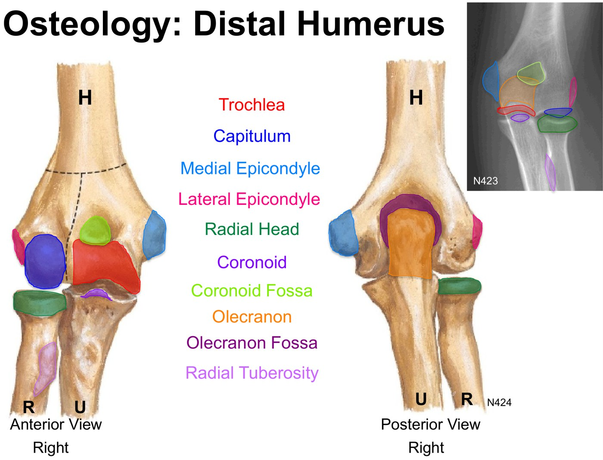
Surgical neck fracture (a low-energy fall in an older person with osteoporosis) puts the axillary nerve at risk. A shaft fracture from a direct blow risks the radial nerve and deep brachial artery in the spiral groove. A distal humerus fracture risks the median nerve, and a medial epicondyle fracture the ulnar nerve.
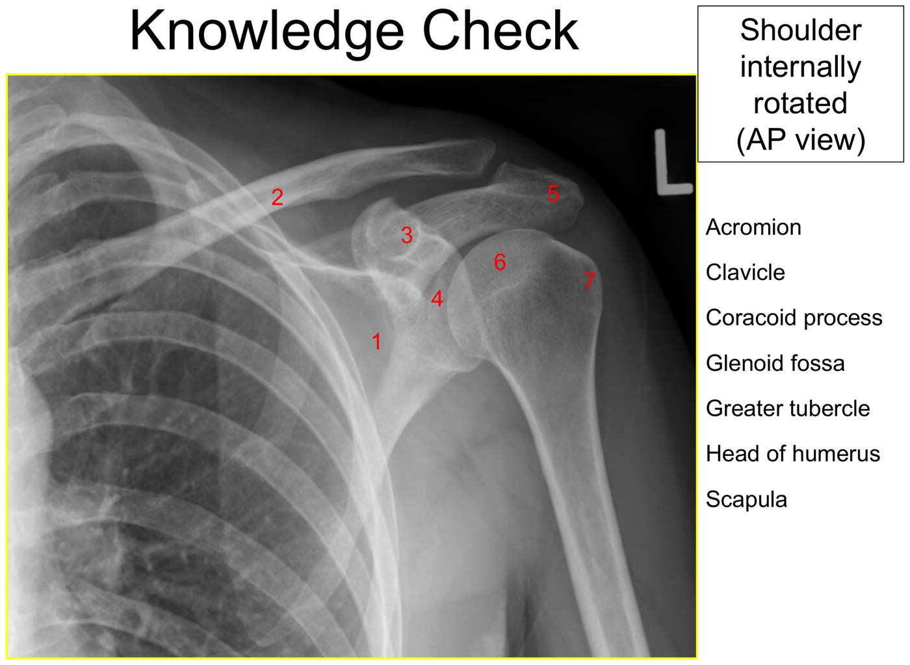
The AC and Glenohumeral Joints
Dr. Martin's joint anatomy: the two girdle joints that get injured.
The Acromioclavicular Joint
| Feature | Detail |
|---|---|
| Type | Plane synovial, uniaxial: two flat surfaces, with a wedge-shaped articular disc in the joint space. Little bony stability, so it depends on the capsule, ligaments and muscles. |
| Capsule | Weak |
| Acromioclavicular ligament | A thickening of the capsule, strongest superiorly |
| Coracoclavicular ligament | Coracoid to clavicle, in two parts, conoid and trapezoid. It gives the joint most of its strength and lets the scapula and arm hang from the strut-like clavicle. |
| Movement | The acromion glides and rotates on the clavicle, letting the scapula move on the thorax for scapulohumeral rhythm |
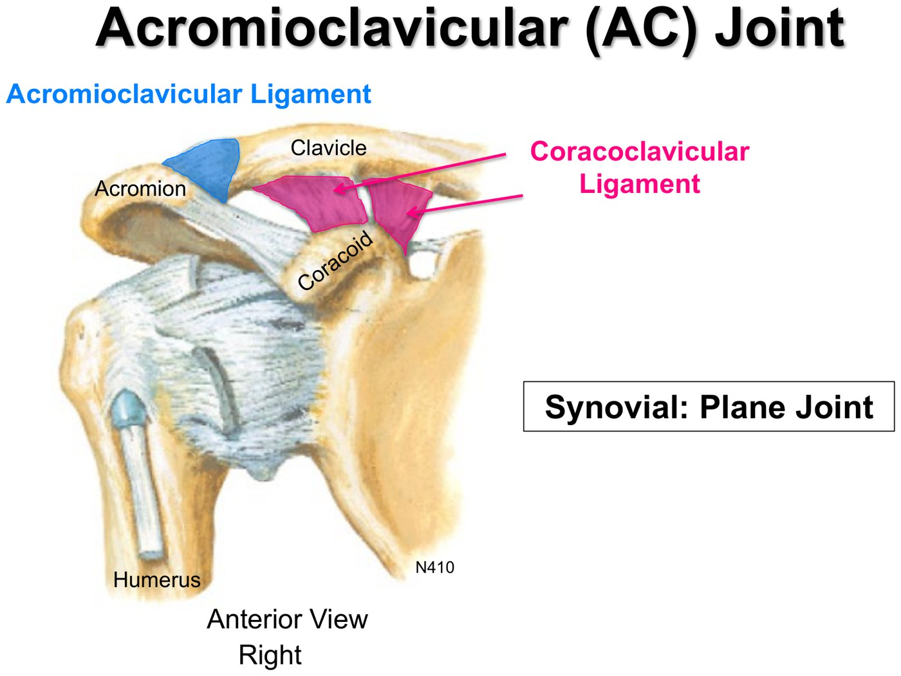
Two ligament systems hold the AC joint: the AC ligament (capsule, blue) and the coracoclavicular ligament (pink). Slide from the deck (Netter).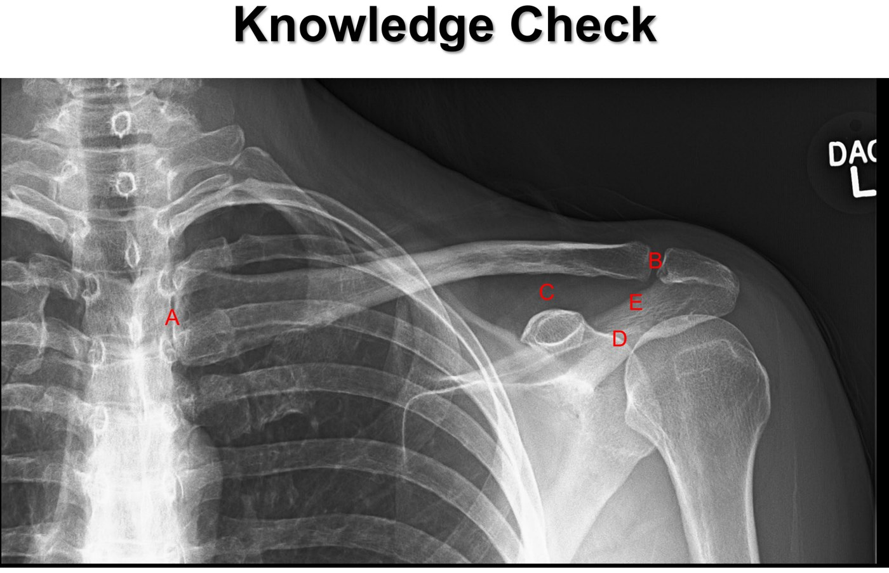
Where is the AC ligament? B. A sternoclavicular joint, B AC joint (the ligament is its capsule), C coracoclavicular ligament, D coracohumeral ligament, E coracoacromial ligament. Slide from the deck.The Glenohumeral Joint
A true ball-and-socket synovial joint that sacrifices stability for mobility. Remember the three stability factors from 7.1: here the bones contribute little (a ball on a plate) and the capsule is deliberately lax, so the shoulder relies on the soft tissues, above all the rotator cuff.
| Structure | Role |
|---|---|
| Capsule | Strong but lax. The axillary recess hangs down into the axilla to allow overhead reach. |
| Glenohumeral ligaments (superior, middle, inferior) | Thickenings of the anterior capsule, from the glenoid rim to the lesser tubercle. You can't separate them in the lab, but the front of the capsule is thicker than the back. |
| Coracohumeral ligament | Base of the coracoid to the greater tubercle: strengthens the capsule superiorly |
| Coracoacromial ligament | Coracoid to acromion, forming the coracoacromial arch, a roof that prevents upward displacement of the head. The arch is so strong that a huge upward force fractures the humerus or clavicle first. (It doesn't stabilize the AC joint.) |
| Transverse humeral ligament | Bridges the bicipital groove over the biceps tendon |
| Labrum | A fibrocartilage rim around the glenoid that deepens the socket a little, from a plate to “a pasta dish” |
| Articular cartilage | Covers far more of the humeral head than of the glenoid, because the head rotates |
| Bursae | Subacromial (often continuous with the subdeltoid), between the acromion, cuff tendons and deltoid. It reduces friction in a tight space that gets tighter overhead. Also the subscapular bursa, deep to subscapularis. |
| Long head of biceps | Runs inside the joint from the supraglenoid tubercle down the bicipital groove |
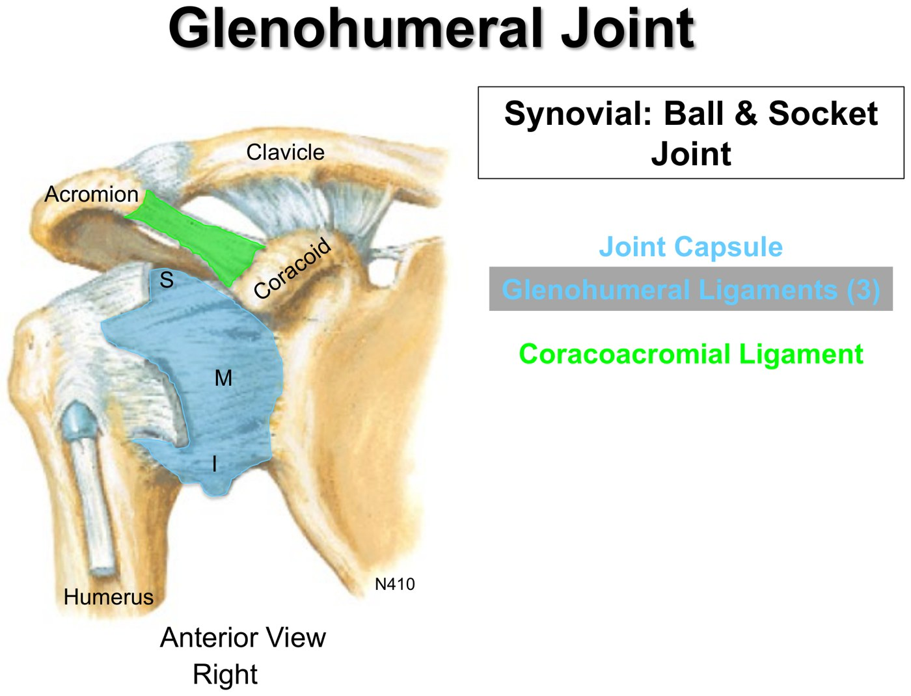
From the front: the capsule with its superior, middle and inferior glenohumeral ligaments (S, M, I), under the coracoacromial ligament roof. Slide from the deck (Netter).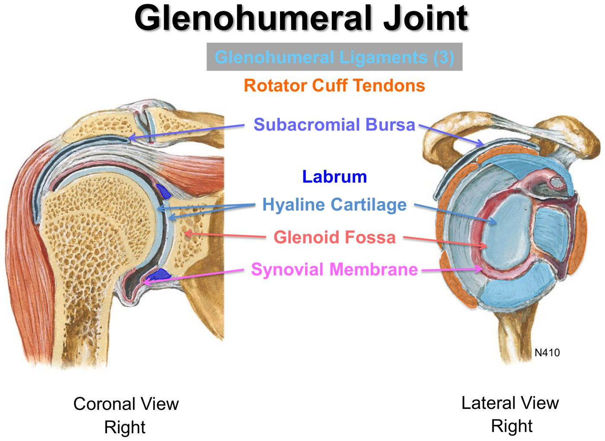
Coronal section and the view into the glenoid: the labrum, cartilage, synovium, subacromial bursa, and the rotator cuff tendons wrapped all round. They are the joint's real stabilizers. Slide from the deck (Netter).Dislocation is usually anteroinferior. The coracoacromial arch blocks the top and the capsule is weakest anteroinferiorly. The axillary nerve is at risk.
Impingement: the supraspinatus tendon gets pinched in the subacromial space, causing tendonitis. Chronic overuse can stretch the static stabilizers, causing mild instability and more load on the cuff. The cuff weakens, the head rides up, and secondary impingement follows.
AC Joint Problems
Dr. Faber, two short recordings. “Common, and easy to sort out.”
AC Osteoarthritis vs AC Separation
Only two common things happen here, and the history usually sorts them.
| AC osteoarthritis | AC instability (“separation”) | |
|---|---|---|
| Onset | Gradual, from wear and tear | Acute injury: a fall onto the point of the shoulder (over the handlebars, into the boards). The acromion is driven down and the clavicle up. |
| Symptoms | Localized pain at the tip of the shoulder, activity-related, worst reaching across the chest | Pain over the AC joint after the injury |
| Exam | A small bump, tenderness over the joint. Motion is usually normal (most motion is glenohumeral and scapulothoracic), but there may be pain-related weakness. | A prominence where the clavicle sits high relative to the acromion |
| X-ray | Asymmetric joint-space loss progressing to obliteration, osteophytes, subchondral cysts, sclerosis | The clavicle displaced from the acromion. More displacement means a higher type. |
| Treatment | Education; activity modification; ice and heat; a steroid plus local anaesthetic injection; NSAIDs. Last resort: resect the distal clavicle, opening a gap that fills with scar as a new cushion, which is predictably effective. | Types I–III: education, sling, analgesics, ice, early range of motion. Types IV–V: surgery. |
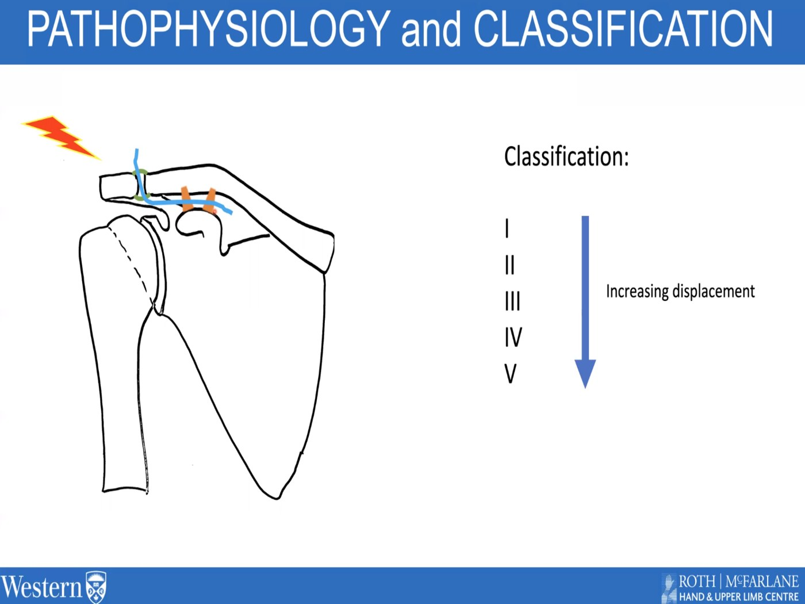
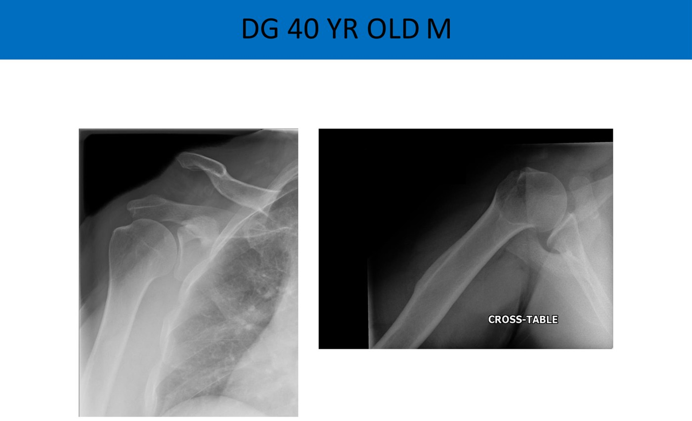
A widely displaced separation, the kind Dr. Faber calls an “ear tickler” because the clavicle sticks up so high. This is the IV–V end, treated with surgery. Slide from the deck.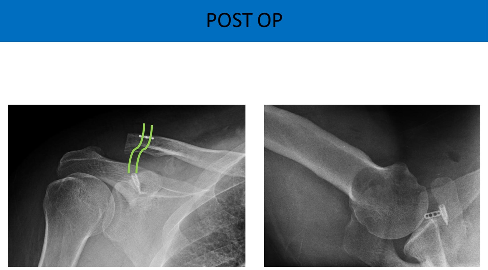
The fix: a small screw in the coracoid, with threads passed up through the clavicle and tied over a plate. In effect it rebuilds the coracoclavicular ligament. Slide from the deck.Knowledge check
A 24-year-old was checked into the boards and has pain right over the AC joint. Her x-ray shows an essentially congruent AC joint, perhaps with mild upward migration. → Conservative: sling, ice, analgesia, early exercises. You won't be asked to type separations on x-ray, but you should know the features that point to surgery: marked displacement or compromise. Dr. Faber's own example is a 47-year-old competitive rower treated with education, a sling and early motion. Six months later he was rowing at a high level, still with a visible bump.
Glenohumeral Joint Problems
Dr. Faber, three recordings: arthritis, instability, and adhesive capsulitis.
Shoulder Arthritis
A progressive disorder of pain, reduced motion and loss of function. It comes in two patterns, and the range of motion tells them apart.
| Non-inflammatory: OA, post-traumatic | Inflammatory: RA, psoriatic, crystal (e.g. pseudogout) | |
|---|---|---|
| Pain | Deep, aching | Deep, aching |
| Motion | Active AND passive reduced: osteophytes physically block it, so it won't go even when you push | Active reduced, passive often better: no marginal osteophytes, so the patient can reach higher helping with the good arm |
| Rotator cuff | Usually intact | Usually poor: the disease damages the cuff as well as the cartilage |
| X-ray | Asymmetric joint-space narrowing (best seen on the axillary view), osteophytes, cysts, subchondral sclerosis | Symmetric (concentric) narrowing, bone deformity, periarticular erosions, osteopenia |
| Replacement | Anatomic total shoulder | Reverse total shoulder |
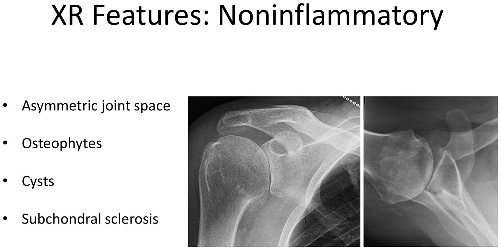
OA. On the axillary view, the back of the joint is worn to nothing while the front still has cartilage (asymmetric wear). There is a big inferior osteophyte, cysts, and dense subchondral sclerosis where the load lands. Slide from the deck.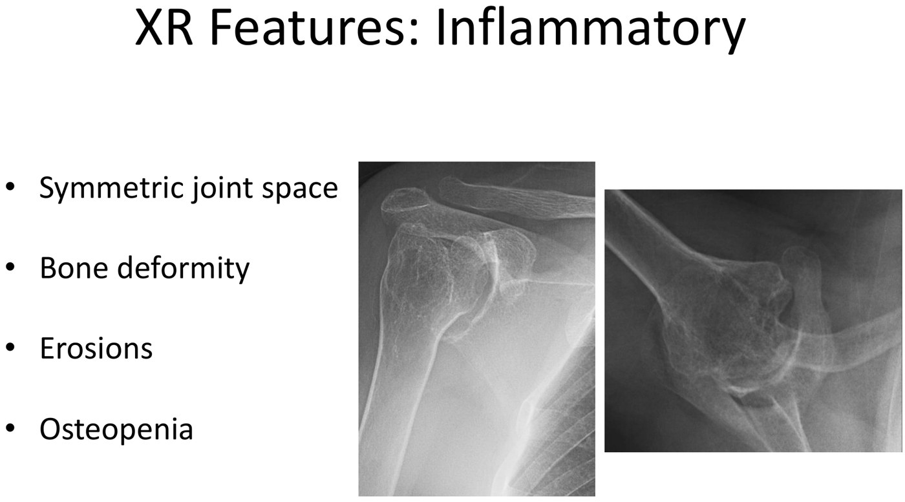
Inflammatory. The joint space is narrowed evenly all the way round. The bone is deformed and eroded (the glenoid rubbing on the humeral neck) and washed out, with thin cortices. Slide from the deck.| Treatment | Details |
|---|---|
| Non-operative, first for everyone | Education and natural history; activity modification; medications (the new inflammatory-arthritis drugs have “revolutionized” treatment; ibuprofen and acetaminophen for OA); physio for strength and mobility |
| Debridement | For young patients. Not curative: it clears out mechanical “catching”. |
| Anatomic total shoulder (OA) | The humeral head is cut and replaced with an uncemented, textured stem that bone grows onto, plus a metal head, and a cemented plastic glenoid |
| Reverse total shoulder (inflammatory) | The ball goes on the glenoid and the cup on the humerus. It's used when the cuff is poor and the joint is structurally deformed, and it's cemented because the bone quality won't grip an implant. |
| Outcomes | 85% good to excellent; 90% still working at 10 years. Failures come from complications: infection, loosening (“like tires, it wears out”), instability, periprosthetic fracture at the stem tip, and progressive cuff disease. |
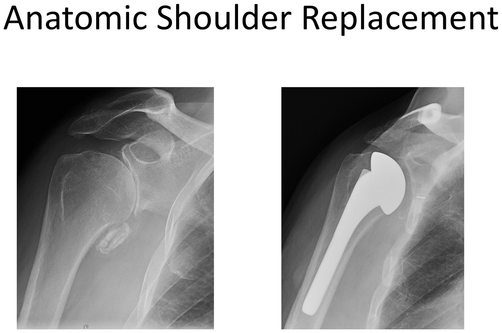
Anatomic replacement for OA. The plastic glenoid isn't visible on x-ray except for a small metal marker in one peg. Slide from the deck.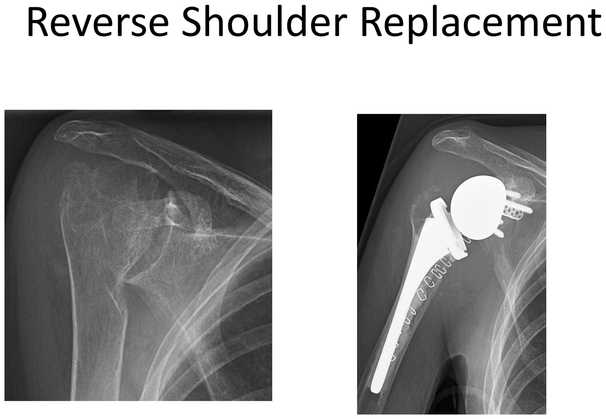
Reverse replacement for inflammatory arthritis: a ball on the glenoid and a cup on the stem, cemented. Slide from the deck.Knowledge check
What fits early treatment of a 47-year-old's shoulder OA? → Physiotherapy and analgesics. Exhaust conservative care first. A reverse replacement is mostly for inflammatory arthritis or cuff problems. Debridement (for the young) or an anatomic replacement come only after conservative care has failed.
Shoulder Instability
The inability to keep the humeral head centred on the glenoid. It runs on a continuum from reduced to subluxated (off-centre but still touching) to dislocated (no normal contact).
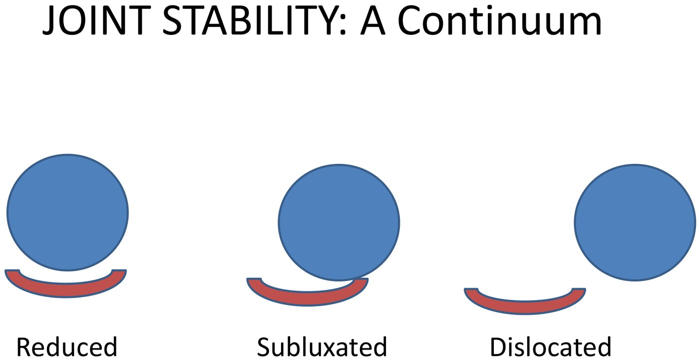
| Stability factor | In the shoulder |
|---|---|
| Ligaments (most important) | Can be torn (traumatic) or stretched or lax (multidirectional instability, possibly a connective tissue disorder or poor motor control) |
| Labrum (most important) | Increases surface area and depth, and acts as a bumper |
| Bones | Relatively flat against each other, like a golf ball on a tee, so the head can slide. Compare the elbow, whose bone shape prevents side-to-side sliding. |
| Rotator cuff and muscle forces | Stabilize, but misfiring muscles can cause instability |
| Nerves | Proprioceptive fibres in the capsule. Unstable shoulders usually have poor proprioception. |
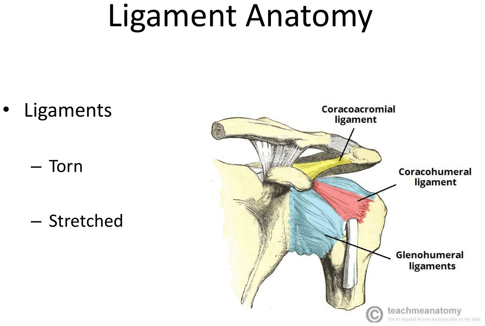
Ligaments torn, or ligaments stretched: the two routes to instability. Slide from the deck (TeachMeAnatomy).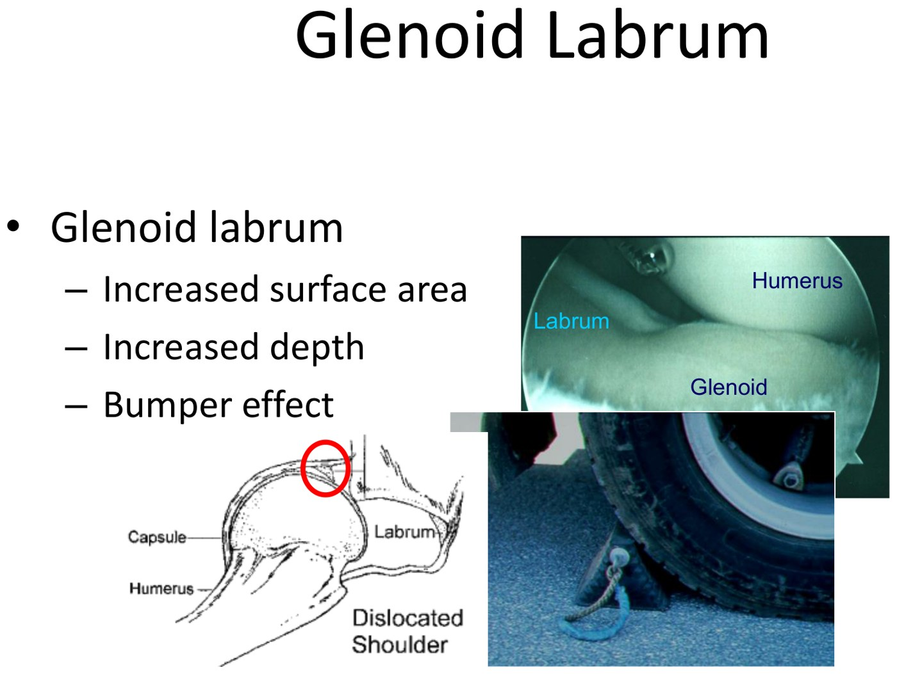
The labrum is a bumper. In a dislocation, the head can tear it off the glenoid rim. Slide from the deck.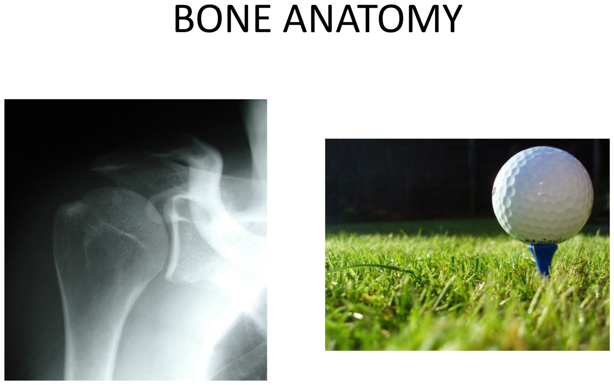
Bone anatomy: a golf ball on a tee. There is very little bony constraint. Slide from the deck.Three questions to name the problem: what was the onset (traumatic or atraumatic)? Which direction (anterior, posterior, inferior, a combination)? What degree (subluxation or dislocation)?
| Traumatic | Atraumatic (AMBRI) | |
|---|---|---|
| Onset | An injury that forced the head out | Atraumatic: it can just “pop out” in the wrong position |
| Direction | Unidirectional, almost always anterior (anterior >> posterior) | Multidirectional, often Bilateral |
| Problem | “Torn loose”: the labrum and capsule are torn | “Born loose”: lax tissue, poor motor control |
| Treatment | Surgery often, especially in the young and in recurrent dislocators: arthroscopic capsule-labral repair (85% success). At arthroscopy the torn labrum sits off the front of the glenoid, and there is often a dent in the back of the humeral head (a Hill–Sachs lesion). The labrum is freshened so it bleeds and heals, then reattached with suture anchors. | Rehab: physio for motor control and proprioception, for at least a year. Only then an Inferior capsular shift, open or arthroscopic (70% success open). Surgery is uncommon. |
In the teens and twenties, recurrence after a first dislocation is very likely, so the threshold to repair is lower. In the 50s and beyond, recurrent instability is less likely, and what follows a dislocation is more often a rotator cuff problem. (Dr. Faber, in his 50s, uses himself as the example.)
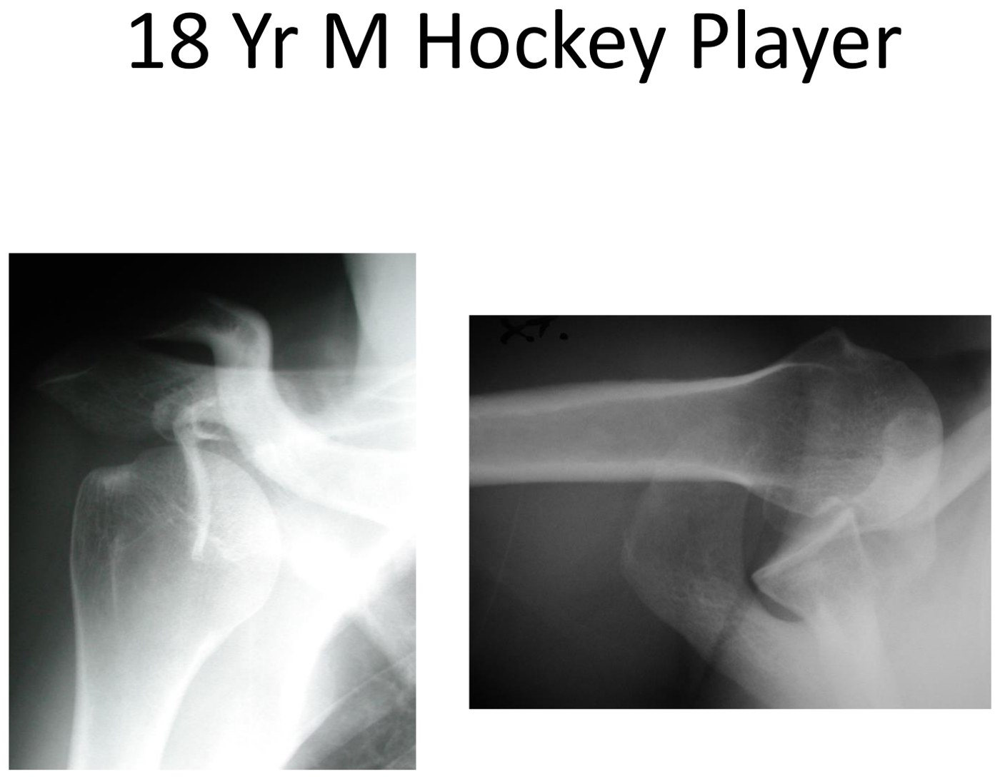
An 18-year-old hockey player against the boards. On the AP the head isn't parallel to the glenoid. Always get a second view. The axillary view, looking up into the armpit from the foot of the bed with the clavicle in front, shows the head anterior to the glenoid. Slide from the deck.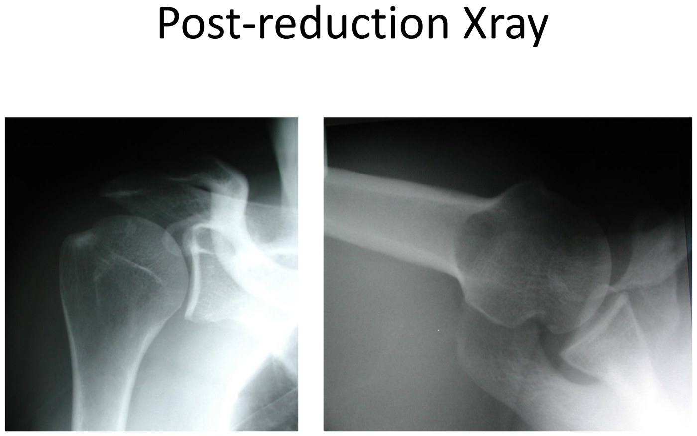
After reduction: on the AP you can see through the joint again, and on the axillary view the head sits centred on the glenoid. Slide from the deck.Many methods exist. The slide shows traction–countertraction, with one person pulling the arm while another pulls the thorax the other way. The principles matter more than the method:
- Safety first: monitors, oxygen, and analgesia or sedation given safely, with antidotes and airway skills ready
- Manipulate to correct the deformity
- Re-examine afterwards: check that the neurovascular exam hasn't changed
- Post-reduction x-ray to confirm it's back in place
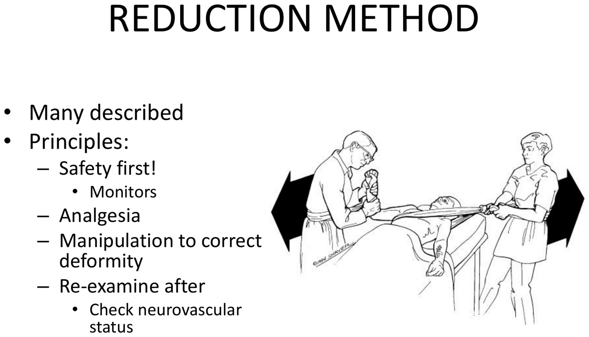
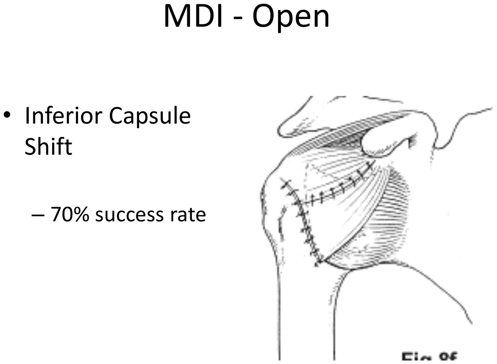
Knowledge check
A woman has dislocated one shoulder at least a dozen times (it sometimes pops out on its own) and the other shoulder at least three times, and has never had treatment. → Non-surgical. Recurrent atraumatic dislocation with generalized laxity is a physio problem: strengthen the muscular and proprioceptive contributions to stability.
Adhesive Capsulitis (Frozen Shoulder)
| Feature | Fact |
|---|---|
| Who | 2% of adults, but up to 20% of people with diabetes, often in both shoulders one after the other. Onset in the 40s–50s. |
| Cause | Pathophysiology unknown; most often idiopathic. Associated with diabetes (strongly), cervical disc disease, thyroid disease and cardiac disease, and with trigger finger and Dupuytren's contracture. |
| Definition (ASES) | “A condition of uncertain etiology characterized by a restriction of active and passive motion that occurs in the absence of a known intrinsic shoulder disorder” |
| Exam | Global restriction: elevation, external and internal rotation, abduction. Active = passive, both markedly reduced. |
| X-ray | Normal: no arthritis, no post-traumatic deformity, no heterotopic bone |
| Pathology | The capsule thickens from about 1–1.5 mm to almost 1 cm, leathery and contracted |
Think intra-articular (arthritis or post-traumatic deformity, a mechanical block), extra-articular (capsular, i.e. adhesive capsulitis; muscular spasticity, e.g. after a stroke; heterotopic bone, bone forming where it shouldn't, such as in muscle), or combined. The x-ray separates them. If the x-ray is normal and there's no trauma, a stiff shoulder with equal loss of active and passive motion is the capsule.
| Stage (Uhthoff) | What's happening |
|---|---|
| 1. Freezing | Inflammatory: a red, angry synovium. This is the painful phase. |
| 2. Frozen | The synovium becomes thick, leathery capsule. Very stiff. |
| 3. Thawing | The capsule regains some elastic recoil and motion returns |
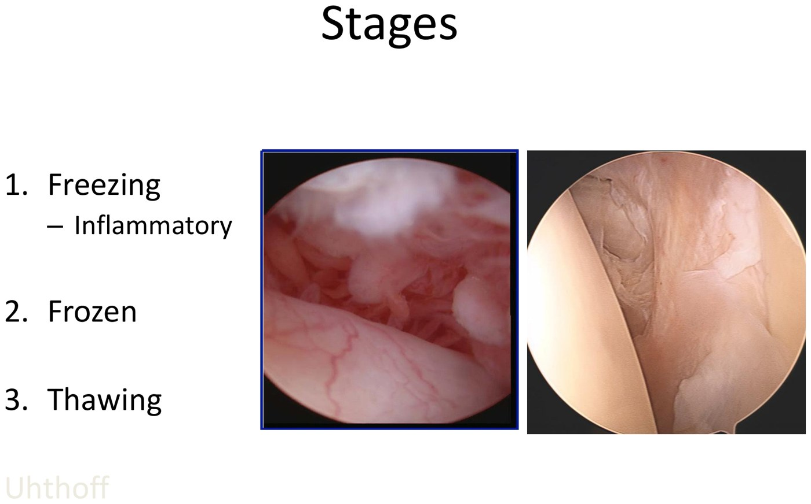
| Treatment | What the evidence says |
|---|---|
| Education (the most important) | Patients are very distressed: it hurts, then it's disabling (they can't wash their hair). Knowing it's self-limited puts them at ease. |
| Pain control | Acetaminophen plus ibuprofen, especially early |
| Physiotherapy | Controversial. No quality studies show a significant effect. Early on it may be “gas on the fire”; it has more of a role later. Physiotherapists are great at the education. |
| Intra-articular steroid | Given in the inflammatory stage, it probably shortens the course and is superior to PT early, but there's no difference at 1 year |
| Hydrodistension (“brisement”, from the French briser, to break) | Saline injected under pressure to burst the capsule |
| Surgery: arthroscopic capsulectomy ± manipulation under anaesthesia | Faster return of motion, but the same as everything else at 2 years. It's usually chosen by people who've had it in one shoulder for up to 2 years and now have it in the other. |
No treatment beats the others in the long run. It usually resolves on its own, but it can take up to 2 years, and in people with diabetes it often doesn't fully resolve, whatever the treatment.
Knowledge check
Which movements are limited in adhesive capsulitis? → Active and passive. If the joint won't move passively, it can't move actively either: it doesn't matter who is trying to move it. Dr. Faber's case: a 47-year-old with diabetes, 4 months of pain and progressive loss of motion, internal rotation only to his back, and normal x-rays.
Built from Dr. Charys Martin and Dr. Ken Faber's “Clinical Approach to Osteology and Joints of the Proximal Upper Extremity” module: eleven recordings, its knowledge checks, the 81-slide deck, and Dr. Martin's anatomy mini-text. Patient photographs (an AC separation, the rower, arthritic and lax shoulders, and the frozen-shoulder patient, several with faces blocked out) and the cadaver knowledge check are left out and described in text; x-rays and diagrams are kept. Discrepancies flagged: the knowledge-check feedback calls the pectoral girdle “the clavicle and humerus”; it is the clavicle and scapula. The AC-instability recording at one point says “the vast majority of these are going to be treated surgically”, but the slide and the recording's own summary say the opposite: types I–III are non-operative, so it is followed. Rotator cuff disease and biceps tendinopathy are in the objectives but taught elsewhere. Caption corrections: MSK (“MSC”), manubrium (“maneuvering arm”, “maneuver room”), acromioclavicular (“a chromeo curricular”, “crummy clinical”), supraspinous and infraspinous (“super spinous”, “infant spinous”), subscapular (“sub scapula”), olecranon (“electrode on”), capitulum (“curriculum”), coracoclavicular (“core co-curricular”, “car Djokovic”), conoid (“Conroy”), coracoacromial (“cargo acromion”), hyaline (“highland”), subchondral (“subcultural”, “self control”), osteophytes (“osteo fights”, “active fight”), Hill–Sachs lesion (“heel sachs”), labrum (“labor”), adhesive capsulitis (“capsule artists”), heterotopic (“heterotrophic”), Dupuytren's (“to be trans”) and brisement (“Griezmann”).